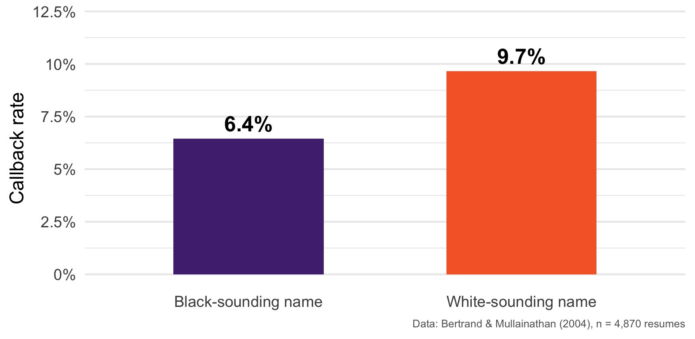
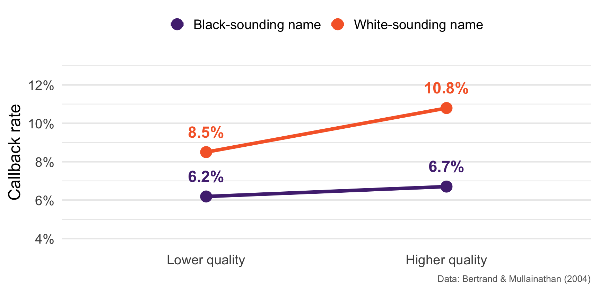
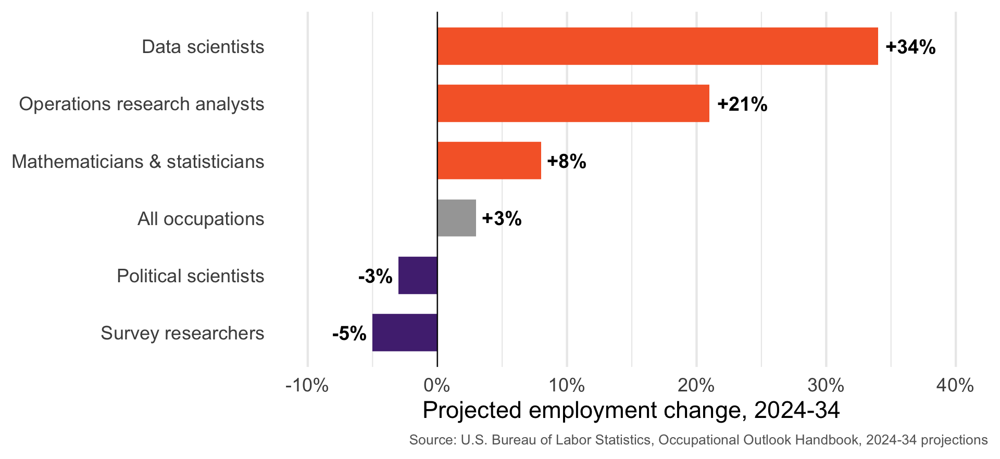

POSC 8410: Introduction
Who am I?
I am a Political Scientist
Comparativist: polarization, representation, democracy
Methodologist: Text-as-Data, Machine Learning, Causal Inference
My third year at Clemson
- PhD Princeton 2022
- GSU: Post Doc 2022-2024
You can call me Will or Dr. Horne, either is fine!
How did I get here?


Enough About me!
Now let’s talk about you for a minute
What does social science research look like?
Three Kinds of Questions
Descriptive: What is happening?
- How polarized is the American electorate? Has it changed since 1980?
Causal: What happens to Y if we change X?
- Does registering voters by mail increase turnout?
Predictive: Given what we know, what comes next?
- Which countries are most at risk of democratic backsliding?
These need different research designs. A lot of bad research is a design built for one question answering a different one.
From Concept to Evidence
The things we care about are abstract: discrimination, polarization, democracy, state capacity
The things we can observe are concrete: survey answers, votes, callbacks, budget lines
Research is the work of connecting the two
- Concept → theory → testable implication → measure → data
Measurement is a choice, and choices can be wrong. “How democratic is Hungary?” has no reading on a dial.
Compared to What?
Almost every interesting claim is a comparison claim
- “The program worked” = recipients did better than they would have otherwise
The problem: we never observe otherwise
- We see the person who got the job training, not that same person in the world where they didn’t
So we substitute a comparison group — everything depends on whether it is a fair one
People who sign up for job training differ from people who don’t in a hundred ways. Which difference produced the result?
What Makes Research Credible?
A clear question — descriptive, causal, or predictive
Valid measurement — your variable captures the concept you claim
A credible comparison — you can defend the counterfactual
Honest uncertainty — you report how wrong you might be
Transparency — someone else could redo it
A Worked Example
Do Employers Racially Discriminate?
A genuinely important policy question
- Hiring discrimination is illegal. Is it happening anyway?
But notice how hard it is to study
You cannot ask employers — nobody self-reports discriminating
You cannot just compare real applicants: people from different races also differ in schools, neighborhoods, networks, experience
This is the “compared to what?” problem!
The Design
Bertrand and Mullainathan (2004) mailed ~5,000 fictitious résumés to help-wanted ads in Boston and Chicago
The résumés were identical except for the name at the top
“Emily Walsh” / “Greg Baker”
“Lakisha Washington” / “Jamal Jones”
Names were randomly assigned to résumés
Outcome: did the résumé get a callback?
Randomization manufactures the counterfactual. The only systematic difference between the two piles is the name.
The Result

A gap of about 3 percentage points, or roughly 50% more callbacks for an identical résumé.
Does a Better Résumé Help?

The Returns to a Better Résumé
White-sounding names: a stronger résumé buys +2.3 points of callback
Black-sounding names: a stronger résumé buys +0.5 points
The gap does widens as you improve your credentials
This kind of “the effect of X depends on Z” claim has a name. We will look at interactions at the end of the semester
Is this credible?
Clear question? Yes - causal, and stated as such
Valid measurement? Callbacks, not hires. A real limitation, but defensible
Credible comparison? Yes - randomization does the work
Honest uncertainty? Yes - we will get to how to measure this!
Transparent? Yes - the data is public.
We will learn to do this kind of work!
Is 3 points a big gap? → Descriptive statistics, measurement
Could we have gotten this by chance? → Probability
What would we expect in a different sample? → Sampling and estimation
How confident should we be? → Hypothesis testing, confidence intervals
Does the gap differ by industry? By résumé quality? → ANOVA and regression
We will come back to this study all semester. You will analyze this data yourself.
Goals of the course
The goals of this course are:
Introduce the foundations of Quantitative Social Science (QSS)
Descriptive Statistics
Probability Theory
Statistical inference
Regression analysis -> our final destination
Link QSS foundations to policy relevant questions
Build enough R fluency to do your own analyses
Course Sequence
In practice, this is the first course in a sequence
We will cover roughly intro level stats –> OLS Regression. Roughly 2 semesters of (rigorous) UG stats.
Spring: advanced regression models + design based techniques for causal inference (DiD, Experiments, etc)
Tentatively: Quant 3 (POSC 8430) will cover machine learning, text-as-data and some other advanced topics.
Why Quantitative Social Science?
Not Quant vs Qual
Quant and qual
Mixed methods research often stronger than pure qual or pure quant
- I’ve done archival work + Other courses available specifically devoted to qualitative research methods
- Commonalities in thinking hard about good research design
- King, Keohane and Verba (1994) Designing Social Inquiry is the classic on this point
New techniques –> wider range of research questions
Motivation

Motivation
It is not that “social scientist” is a booming job title
- Political scientists: -3%. Survey researchers: -5%
It is that the methods are in demand, everywhere
- Data scientists: +34%, median pay $112,590 (May 2024)
The valuable combination is substantive knowledge + the ability to work with data
- Plenty of people can run a regression. Far fewer know which regression to run, or what it means.
That combination is what this course is for.
Course Outline
Weeks 1-2: Getting up and running in R; describing data
Weeks 3-6: Probability theory
Weeks 7-8: Sampling, estimation, and inference
Midterm
Weeks 9-10: Asymptotics, hypothesis testing, confidence intervals
Weeks 11-14: ANOVA and regression
This Will Require Some Math
Calculus (derivatives, integrals, limits) + very basic matrix algebra
We will review! Not a bad idea to check out Khan Academy or similar if rusty/new
The math is not there for its own sake
You cannot interpret a regression coefficient you don’t understand
You cannot tell when a method is the wrong tool if you only know how to call it
Grad school –> Learning is your responsibility, be proactive.
Expectations
This course will be hard but…
Don’t stress, grad school is not about grades!
- Goal of this course is to give you tools for your future work
If you are lost….stop me and ask questions
Office hours: By appointment (online or in-person). Please utilize!
Please read! Tons of online resources for both statistics and coding. If you don’t like the readings, feel free to supplement w/ something else.
Course Books
Joseph Blitzstein and Jessica Hwang, Introduction to Probability
Hadley Wickham et al, R for Data Science (second edition)
Gelman, Hill and Vehtari, Regression and Other Stories
Blackwell’s Gov 2002 notes for a more formal treatment
Assignments and Grading
25% Midterm Exam
25% Final Exam
15% Problem sets
- De-emphasizing P-set grades because of gen AI.
35%: Final Project (Research Proposal with Analyses)
Getting Started
This course has two main aims
Teaching the fundamentals of probability + statistics for social scientists
Teaching you to actually do data analysis
We move fast on R: our next two meetings get you to the point where you can load, clean, and plot real data
- There are tons of tools out there to learn R.
A Note on How I Teach R
I am not going to lecture at you about syntax for three weeks
- That is the slowest possible way to learn a language
- We don’t have time for it, anyways!
Instead: two intensive sessions, then you learn by using it
Every problem set is an R assignment
Readings from R4DS are meant to be worked through
If you get stuck, that is normal and expected. Come to office hours.
On Generative AI and Coding
You may use it.
I use it.
But: if you cannot read and explain the code, it is worthless to you
You will be asked to explain your code
The exams are in person/on paper
Use it the way you’d use a very fast, very confident, somewhat sloppy colleague
Why R?
Open Source and Free (unlike STATA, SPSS, SAS, etc)
Widely used in academic and government research
Specifically developed for statistical analysis (unlike Python)
Has friendly IDEs
How do I get R?
R is maintained by CRAN (Comprehensive R Archive Network).
Download here: https://cran.r-project.org/
- A good idea to keep it relatively up-to-date, but you shouldn’t have to update for this course!
You will rarely, if ever, actually open the
Rthat you download from here, but it must be on your machine for anything else to work!
What is an IDE?
R by itself is just a language. An IDE (“Integrated Development Environment”) is the program you actually sit in front of
- Write and save scripts, run code, inspect your data, view plots, manage packages
For R, the two main options are R Studio and Positron
- Both are made by Posit, both free, both open source
We will use Positron
Why Positron?
It is polyglot: R and Python in the same tool, sometimes the same project
- You will likely want Python eventually. This way you don’t relearn your editor later.
It is where Posit’s development effort is going
- R Studio still works and is still supported, but Positron is the forward direction
If you already use R Studio and love it, you may keep using it. Everything in this course runs identically in both. But my screen will show Positron.
How to get Positron
Download Positron here:
https://positron.posit.co/download.html
Free, and installs like any normal application (Mac, Windows, Linux)
Install R first, then Positron — Positron detects the R installations on your machine at startup
Detailed install instructions, if you want them: https://positron.posit.co/install.html
Before Next Class
Required: install R, then install Positron, and confirm Positron opens and finds R
We start working with data immediately. If your setup is broken you will fall behind on day one.
If you hit a wall, email me before class.
Read: Wickham, R for Data Science, Introduction and Chapter 2
Read: Ismay et al, Statistical Inference via Data Science, Chapter 1